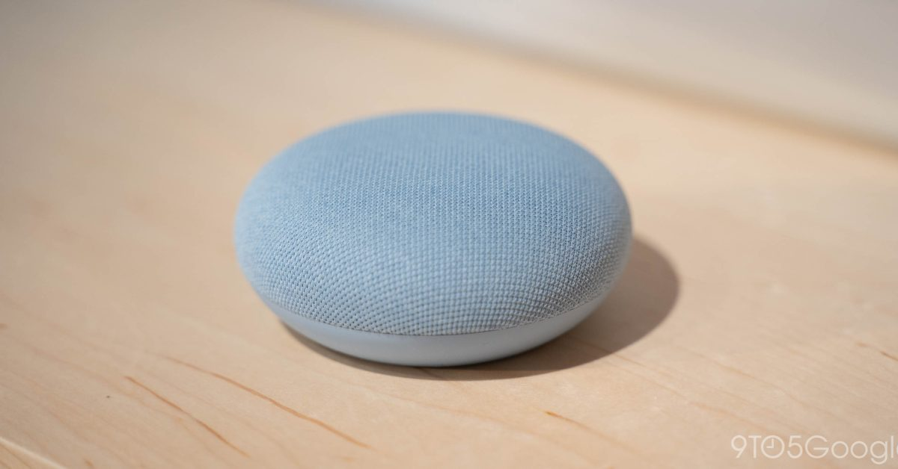

Google Nest Mini (2nd Gen)
Google’s puck-shaped smart speaker — nearly identical outside to the 2017 Home Mini, but with a machine-learning engine integrated into its main processor, so speech recognition can run locally.

FCC ID
FCC ID: A4R-H2C (Grantee: A4R = Google LLC) for model H2C, filed September 2019. The filing sketch confirmed the wall-mount hole and 3.5 mm jack before launch.
What the FCC filing revealed
The FCC filing for this device includes the documents manufacturers are required to submit: external photos, internal photos, test setup photos, RF test reports, and the user manual. These are public record at fccid.io.
What you can typically find:
- Internal photos — board layout, chip placement, shielding, antenna design
- Block diagrams — sometimes included, showing the RF chain architecture
- Test reports — conducted and radiated emissions data, which can reveal operating frequencies and power levels
- Label placement — where the FCC ID lives on the device
What the FCC filing does not include: schematics (usually withheld under confidentiality requests), firmware, bill of materials, or debug interface documentation.
What we reveal
The FCC tells you what a device emits. We tell you what’s inside and how it works.
- Chip-level identification — every major IC named, with datasheet links where public documentation exists
- Board mapping — what connects to what, which test pads matter, where the debug interfaces hide
- What the manufacturer won’t tell you — undocumented features, hidden radios, silent telemetry, repair blockers
Key Chips
- Synaptics AS370 A1 — the main application CPU.
- ML engine integrated in the AS370 SoC — not a separate chip; it runs on-device speech recognition and natural-language understanding so common commands don’t need a round trip to Google’s servers.
- Toshiba TC58NVG2S0H — NAND flash.
- Nanya NT5CC128M16JR-EK — DRAM.
Teardown Notes
- The fabric top lifts away to reveal a compact circular PCB. Google added a wall-mount screw hole on the bottom — the headline hardware change over the Home Mini. There is no 3.5 mm jack and no USB port on this device; the only connector is the proprietary DC power barrel.
- A third microphone was added (the Home Mini had two) to improve far-field voice pickup.
- The enclosure is fabric-over-plastic with adhesive; opening it is non-destructive if you work slowly with a thin spudger, but the fabric can stretch if forced.
Simple Entry Points
Ports: there are none to use
What do I need? Nothing — there is no port to plug into.
- The Nest Mini has no 3.5 mm jack and no USB port. Its only connector is the proprietary DC power barrel, which carries power and nothing else. Any guide claiming a wired audio output or a USB data connection on this device is wrong.
- The device runs a locked bootloader; community research focuses on the documented Cast and Assistant APIs rather than hardware debug.
- For local control without Google’s cloud, the documented path is the open-source Home Assistant integration, which uses the official local APIs.
$ # Check what the device exposes on your local network
$ nmap -p 8008,8009 192.168.1.50
PORT STATE SERVICE
8008/tcp open http
8009/tcp open ajp13The Nest Mini’s bootloader is locked and there is no documented hardware debug header; this page records what is verifiable rather than speculating.
The Full Record
Everything in this timeline is documented — a court outcome, a regulator’s action, a published security analysis, or Google’s own statements — and each entry links its source. Where a popular claim about the Nest Mini is not proven, it is labeled Unverified at the end, with the evidence on both sides.
Scope note: the 2017 entry is the Nest Mini’s direct predecessor, the Google Home Mini, and is labeled as such. The other entries are the record of the Google Assistant platform this speaker runs on. No recalls, lawsuits, or regulator actions against the Nest Mini model itself were found in the public record as of November 2026 — the entries below are its platform’s record, plus its predecessor’s defining defect.
| Year | What happened | Source |
|---|---|---|
| 2017 | Predecessor model: the Home Mini that recorded on its own. Android Police’s Artem Russakovskii found that his Google Home Mini review unit had been recording and uploading audio from his home almost constantly. The cause was hardware: the touch sensor on top of the device registered “phantom” presses, repeatedly firing the long-press that was supposed to summon the Assistant only when a person held the top. Google first pushed an update on October 7, 2017 to stop the touch mechanism misbehaving, deleted the top-touch events from October 4–7 from users’ activity pages, and then made the stronger call: it permanently removed all top touch functionality from the Home Mini by software update, saying that although it had received only a few reports, it wanted people to have complete peace of mind. Some single-tap functions later returned as a long-press on the side of the device; the top long-press never did. | TechCrunch — Google removes Home Mini top touch function |
| 2019 | Contractors listened to Assistant recordings; Google confirmed the program (platform-level). Belgian broadcaster VRT NWS obtained more than 1,000 Google Assistant recordings from a whistleblowing contractor and reported that 153 of them should never have been recorded because the wake phrase was not clearly said, and that some clips contained addresses and personal details enough to identify the speakers. Google answered in its own blog post: it partners with language experts who review and transcribe a small set of queries, only about 0.2 percent of all audio snippets, with snippets not associated with user accounts and reviewers directed not to transcribe background conversations. Google said the contractor who leaked the Dutch audio had violated its data security policies and that it was conducting a full review of its safeguards. | Google — more information about our processes to safeguard speech data (Google blog, July 11, 2019) |
| 2019–2026 | $68 million Google Assistant privacy settlement (platform-level). A class action filed in July 2019 — Kumandan v. Google LLC, consolidated as In re Google Assistant Privacy Litigation, No. 5:19-cv-04286-BLF in the U.S. District Court for the Northern District of California — alleged that Google Assistant recorded and transmitted people’s communications without intentional activation, in what the settlement calls “false accepts” (a hot word detected when none was spoken), and disclosed recordings to third-party review vendors. Google denied the allegations and admitted no wrongdoing. The settlement created a $68 million non-reversionary fund for two classes covering May 18, 2016 to March 19, 2026: purchasers of Google-made devices, and Assistant users and household members whose communications were recorded through a false accept or shared with a review vendor. The court’s order names Google Home, Home Mini, Home Max, Nest Hub, Nest Hub Max, and Pixel phones as Google-made devices; the Nest Mini runs the same Assistant and was on sale throughout the class period, but is not named device by device. Judge Beth Labson Freeman granted final approval on October 13, 2026 (ECF No. 584), overruling all seven objections. The agreement provides no injunctive relief — Google’s sole obligation under it is payment. | Recording Law — final approval of the $68M Google Assistant settlement (order ECF No. 584) |
Did you know
- One drinking bottle dresses more than two Nest Minis. The Nest Mini’s fabric top is made from 100% recycled plastic bottles, and Google’s product manager put the ratio plainly at launch: a single half-liter plastic bottle makes enough fabric to cover more than two Nest Mini devices. The enclosure underneath is 35% recycled plastic. Source: BetaNews — Nest Mini comes with an upgraded Google Assistant (Google launch statements).
- It carries a machine-learning chip rated at up to one TeraOPS. That dedicated chip — a teraOPS is a trillion operations per second — lets the Nest Mini learn your most common commands and process them on the device instead of in Google’s data centers, for a faster response. At launch this local processing applied in the US. Source: BetaNews — Nest Mini comes with an upgraded Google Assistant.
- It listens with sound you cannot hear to know you are near. The Nest Mini uses ultrasound sensing: it emits inaudible chirps, reads the reflections, and lights up its volume touch points as your hand approaches, so the controls are findable in the dark. Source: Wikipedia — Google Nest smart speakers (Nest Mini).
- Its FCC filing showed a headphone jack that does not exist. The pre-launch FCC filing sketch for model H2C showed a wall-mount hole and a 3.5 mm jack. The wall mount shipped; the jack did not — a retail Nest Mini’s only connector is its proprietary DC power barrel, with no audio output and no USB port. Source: FCC filing A4R-H2C and iFixit — Nest Mini teardown.
- Its predecessor partly got its touch controls back — on the side. Two months after Google permanently killed the Home Mini’s top touch over the phantom-press defect, a December 2017 update (firmware 1.29) restored play/pause, alarm-silencing, and call-ending as a long-press on the side of the device. The top long-press that summoned the Assistant was never restored. Source: Android Police — Home Mini update restores touch via side long-press.
Further Reading
- Google Nest Mini Teardown — iFixit
- Google Nest Mini (H2C) — WikiDevi
“Code never lies, comments sometimes do.”
— Ron Jeffries